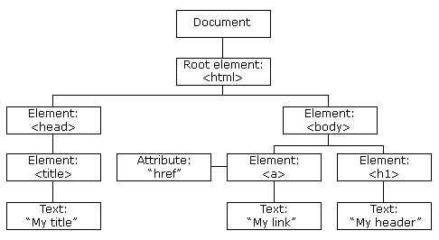

document.write
Con document.write("Hola Mundo!") uno puede escribir una cadena texto sobre el documento
Con document.write("Hola Mundo!") uno puede escribir una cadena texto sobre el documento
Como se declara una variable en JS:
var mi-variable-numerica=7;
var mi-variable-texto="hola mundo";
let mi-variable-local=7;
const variable-solo-lecturaPI=3.14;
1. Ámbito Global: Cuando se declara una variable fuera de una función, se le denomina variable global, porque está disponible para cualquier otro código en el documento actual.
2. Ámbito Bloque: Este nuevo ámbito es utilizado para las variables declaradas con la palabra reservada let / const dentro de un bloque de código delimitados por llaves {}, esto implica que no pueden ser accesibles fuera de este bloque.
3. Ámbito: Función: Cuando se declara una variable dentro de una función, se le denomina variable local, porque está disponible sólo dentro de esa función donde fue declarada.
| Operador | Descripción | Ejemplo |
|---|---|---|
| + suma | Suma dos números | let suma=5+7; |
| - resta | Resta dos números | let resta=5-7; |
| * multiplicación | multiplica dos números | let multi=5*7; |
| / división | divide dos números | let div=5/7; |
| % módulo | devuelve el resto de la división | let mod=17%4; |
| ++ incremento | suma un valor a una variable | let i=1; i++; (suma 1 a i) |
| -- decremento | resta un valor a una variable | let i=1; i--; (resta 1 a i) |
| Operador | Descripción |
|---|---|
| == igual que | devuelve true si ambos valores son iguales |
| != distinto que | devuelve true si ambos valores son distintos |
| >= mayor o igual que | devuelve true si el operando de la izquierda es mayor o igual que el de la derecha |
| > mayor que | devuelve true si si el operando de la izquierda es mayor que el de la derecha |
| < menor que | devuelve true si si el operando de la izquierda es menor que el de la derecha |
| <= menor o igual que | devuelve true si el operando de la izquierda es menor o igual que el de la derecha |
La sintaxis de este operador es. condición? valor1:valor2
Si la condición es true entonces tomará el valor 1, si no tomara el valor 2
ejemplo, esta sentencia asigna el valor "adulto" a la varialbe estado si la edad es mator o igual a 18, si no se le asigna "menor"
var estado=(edad>=18?"adulto":"menor")
Switch
Una sentencia switch permite evaluar una expresión e intenta igualar el valor en una etiqueta (case), si encuentra una coincidencia el programa ejecuta la sentencia de ese case, si no, va por el "default"
switch(mes){
case 1:
alert ("El mes es Enero");
break;
case 2:
alert ("El mes es febrero")
break;
case 10:
alert ("El mes es Octubre")
break;
default:
alert ("El mes no es uno de las opciones");
break;
}
Funciones
La declaración de una función consiste en:
function Nombre-funcion(parametro1,parametro2){
código a ejecutar por la función
}
Sentencia repetitiva FOR
La sentencia de for se repite hasta que la condición sea falsa
su estructura es for ([expresión inicial];[condición];[expresión final]){ejecuta el código}
for (var i=0;i < 10;i++ ){
console.log ("numero:" + i);
}
Sentencia WHILE
Se ejecuta mientras sea verdadera
Su estructura es while ([condicion]){codigo a ejecutar}
Sentencia DO WHILE
Se utiliza para ejecutar sentencias un número indefinido de veces hasta que se cumpla la condición, esta estructura se ejecutará al menos una vez
Su estructura es do{ ...codigo }while (condición, mientras sea false se repite)
Hay diferentes métodos para buscar dentro de arreglos en javascript
array.filter()
Se utiliza para buscar elementos dentro de una arreglo que cumplan cierta condición, creando un nuevo array con los datos filtrados
Por ejemplo si se queire buscar los elementos de una array de números que sean mayores a 10, se hace lo siguiente:
let arreglo=[10,11,3,20,5];
let mayor-que-diez= arreglo.filter(element => element>10);
console.log (mayor-que-diez);
Array.find()
Se usa para encontrar el primer elemento que cumpla con la condición.
Se crea una nueva variable donde entra el valor buscado
let arreglo=[10,11,3,20,5];
let existeElementoMayorqueDiez=arreglo.find(element => element > 10);
console.log(existeElementoMayorqueDiez)// resultado esperado 11
Array.includes()
Se usa para determinar si un arreglo incluye algún valor específico y devuelve true o false.
let arreglo=[10,11,3,20,5];
let incluyeVeinte= arreglo.include(20);
console.log(incluyeVeinte);// resultado esperado true
Array.indexOf()
Devuelve el primer índice encontrado de un elemento específico, sería su posición en el array, casillero 0, casillero 1, casillero 2, etc.
Devuelve -1 si el elemento no existe en el arreglo.
En el siguiente ejemplo se busca el índice de 3 en el arreglo.
let arreglo=[10,11,3,20,5];
let indiceTres= arreglo.indexOf(3);
console.log(indiceTres);// resultado esperado 2
Para poder buscar un máximo y un mínimo se utilizan las funciones de Math.max() y Math.min()
Math.max(1,2,3,4,5); //el valor sería 5
Math.min(1,2,3,4,5); //el valor sería 1
Esta funcion no admite arrays directamente, para poder calcular los valores máximos o minimos dentro de un array hay que pasarlos por otra función "Apply()", que se utiliza en conjunto con Math.max o Math.min.
Hay que tener en cuenta que las funciones Math necesitan por lo menos 2 valores para encontrar un mayor o menor y como el array es un solo bloque, en el primer valor se le pasa "null" y el siguiente se carga el array, quedaría así:
Math.max.apply(null,arreglo) // resultado 5
El Modelo de Objetos de Documentos (DOM) es una plataforma e interfaz de lenguaje neutro que permite a programadores y scirps acceder y actualizar dinámicamente el contenido, la estructura y el estilo de un documento.
Tipos de nodos
Document nodo raíz del que derivan todos los demás nodos
Element Representa cada una de las etiquetas HTML, es el único nodo que puede contener atributos y del que pueden derivar otros nodos
Attr se define un nodo de este tipo para representar cada uno de los atributos de las etiquetas HTML, es uno por cada atributo=valor
text nodo que contiene el texto encerrado por una etiqueta HTML
Métodos
Los métodos son acciones que se pueden realizar a los elementos HTML, los más utilizados son:
Ejemplo que encuentra elemento con id="intro"
const element= document.getElementById("intro")
Ejemplo que encuentra todos los <p>
const element= document.getElementByTagName("p")
Ejemplo que devuelve una lista de todos los elementos con class="intro";
const x= document.getElementByClassName("intro")
Ejemplo que devuelve una lista de todos los elementos <p> con class="intro"
const x= document.querySelectorAll("p.intro")